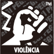
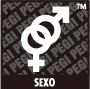
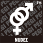
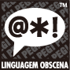
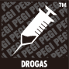
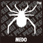
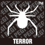
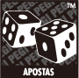

O sistema de classificação etária PEGI (PanEuropean Game Information - informação pan-europeia sobre jogos) foi concebido para ajudar os consumidores, ao comprar videojogos, a decidir se o conteúdo do jogo é adequado ao jogador. O PEGI foi lançado em 2003, substituindo a maior parte dos sistemas de classificação nacionais por um sistema único para a maior parte da Europa.
Nos jogos vendidos em lojas, a classificação etária está claramente visível na embalagem. Nos jogos vendidos através da Nintendo eShop, a classificação etária é exibida antes do download de um jogo.
Cada jogo classificado pelo PEGI exibe um símbolo de idade e, em alguns casos, um ou mais símbolos descritores de conteúdos.
Os níveis de idade do PEGI são: 4, 6, 12, 16 e 18. O símbolo de idade indica a idade mínima recomendada do jogador; não se refere à dificuldade do jogo.








Os símbolos descritores mostram o tipo de conteúdo encontrado no jogo. A gravidade do conteúdo é determinada pela categoria de idade. Por exemplo, um jogo classificado com "16" com um descritor de "Violência" pode incluir conteúdo mais forte do que um jogo classificado com "7" e com o mesmo descritor de "Violência".